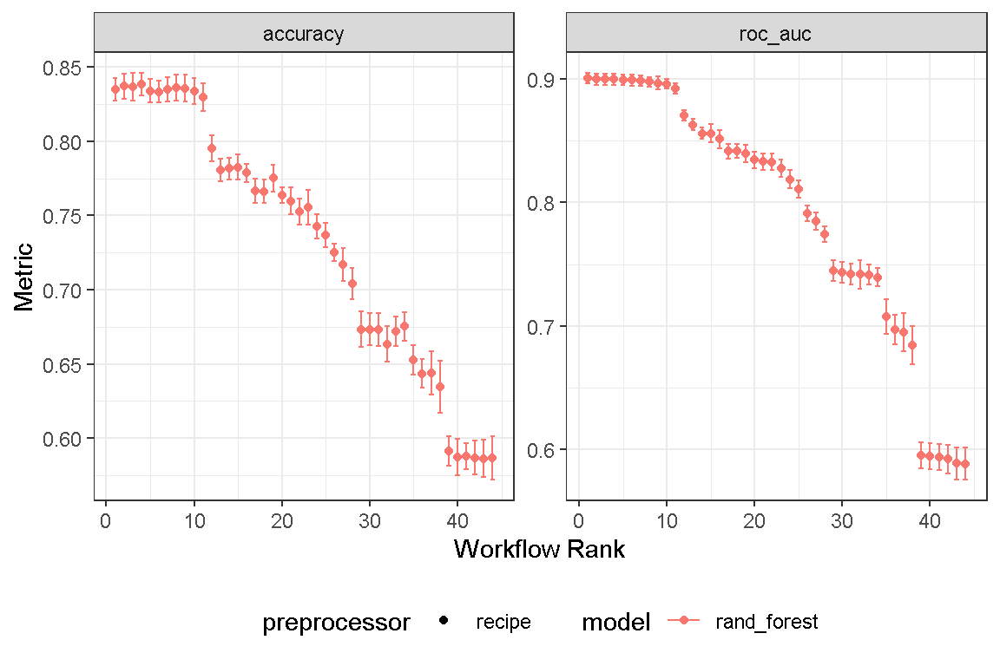

Use Machine Learning to develop a model to determine if a proposed drug could be a mutagen.
I learnt about this dataset while watching Ep. 7: End-to-end machine learning workflow with tidymodels & Posit Team on Posit’s youtube channel. You can also read about it on Posit’s blogpost.
This episode was hosted by Simon Couch whom I first learnt about while researching about tidymodel stacks. Here is a link to Simon’s github page where you can obtain the dataset for practice.
Here is a brief description of the project. A group of scientists investigate whether they can use drug information to predict if a proposed drug could be a mutagen (i.e., toxicity caused by damage to DNA). In pharmaceutical research, mutagenicity refers to a drug’s tendency to increase the rate of mutations due to the damage of genetic material, a key indicator that a drug may be a carcinogen. Mutagenicity can be evaluated using a lab test, though the test requires experienced scientists and time in the lab. A group of scientists are studying whether, instead, they can use known information to quickly predict the mutagenicity of new drugs.
rm(list=ls())
pacman::p_load("tidyverse", #for tidy data science practice
"tidymodels", "workflows", "finetune", "themis", "embed", "fastICA", "dimRed", "uwot", "butcher", # for tidy machine learning
"pacman", #package manager
"devtools", #developer tools
"Hmisc", "skimr", "broom", "modelr",#for EDA
"jtools", "huxtable", "interactions", # for EDA
"ggthemes", "ggstatsplot", "GGally",
"scales", "gridExtra", "patchwork", "ggalt", "vip",
"ggstance", "ggfortify", # for ggplot
"DT", "plotly", #interactive Data Viz
# Lets install some ML related packages that will help tidymodels::
"usemodels", "poissonreg", "agua", "sparklyr", "dials",#load computational engines
"doParallel", # for parallel processing (speedy computation)
"ranger", "xgboost", "glmnet", "kknn", "earth", "klaR", "discrim", "naivebayes", "baguette", "kernlab",#random forest
"janitor", "lubridate")
load("mutagen_results.RData")df <-read_csv("mutagen.csv")
df %>% count(outcome)
data <-
df %>%
dplyr::select(-1) %>%
mutate(outcome = fct_relevel(outcome, "mutagen")) %>%
janitor::clean_names()
# confirm no NA data
table(is.na(data))This is a “wide” data set, with 1580 columns and 4335 rows. It appears to be an ideal dataset to investigate dimensionality reduction and feature extraction, which I will be learning about next week in Module 3 of my class.
There is no missing data, so we do not have to address it in a recipe step. I will skip the EDA portion, and move straight into splitting the data.
I split the data into a training and a test set, strata by outcome. I also create a cross validation dataset for tuning hyper-parameters.
As this dataset is quite large, and I do not have sufficient computing resources to tune it, I will use slice_sample and work on only 20 percent of the dataset.
set.seed(2024030101)
data_split <-
data %>%
#slice_sample(prop = 0.2) %>%
initial_split(strata = outcome)
data_train <-
data_split %>%
training()
data_test <-
data_split %>%
testing()
data_fold <-
data_train %>%
vfold_cv(v = 10, strata = outcome)Simon approached this problem by evaluating several models, then fine-tuning the chosen model, xgboost, using tune_sim_anneal. Random Forest wasn’t among the models he evaluated.
I will approach this problem slightly differently. I will evaluate 4 recipes: the first is a “basic” rec_base with all features. Then, I will create 3 other recipes which use different methods for dimension reduction and feature extraction. They are:
- rec_pca where I will use step_pca for principal component analysis method,
- rec_ica where I will use step_ica for independent component analysis method,
- rec_umap where I will use step_umap for uniform manifold approximation and projection method.
I also also evaluate only one model, the random forest model, and tune its hyper-parameters using tune_grid.
Finally, I will fine-tune the hyper-parameters further using tune_bayes.
Let’s create the 4 recipes.
rec_base <-
recipes::recipe(formula = outcome ~.,
data = data_train) %>%
step_zv(all_predictors()) %>% # remove zero variance
step_YeoJohnson(all_numeric_predictors()) %>%
step_normalize(all_numeric_predictors())
rec_pca <-
rec_base %>%
step_pca(all_numeric_predictors(), num_comp = tune(), threshold = tune())
#
# rec_pls <-
# rec_base %>%
# step_pls(all_numeric_predictors(), outcome = "outcome", num_comp = tune())
rec_ica <-
rec_base %>%
step_ica(all_numeric_predictors(), num_comp = tune())
rec_umap <-
rec_base %>%
step_umap(all_numeric_predictors(),
outcome = "outcome",
num_comp = tune(),
neighbors = tune(),
min_dist = tune(),
learn_rate = tune(),
epochs = tune())I will evaluate the performance of the random forest model.
# random forest
spec_rf <-
rand_forest() %>%
set_engine("ranger",
importance = "impurity") %>%
set_mode("classification") %>%
set_args(trees = tune(),
mtry = tune(),
min_n = tune())I created a workflowset, which will conveniently allow me to evaluate the rf model across both 2 recipes.
# workflow set
base_set <-
workflow_set (
list(ica = rec_ica,
pca = rec_pca,
#PLS = rec_pls,
umap = rec_umap,
basic = rec_base), #preprocessor
list(rf = spec_rf), #model
cross = TRUE) #default is cross = TRUE
# set parameters
param_basic <-
base_set %>%
extract_workflow(id = "basic_rf") %>%
extract_parameter_set_dials() %>%
finalize(data_train)
param_ica <-
base_set %>%
extract_workflow(id = "ica_rf") %>%
extract_parameter_set_dials() %>%
finalize(data_train)
param_pca <-
base_set %>%
extract_workflow(id = "pca_rf") %>%
extract_parameter_set_dials() %>%
finalize(data_train)
param_umap <-
base_set %>%
extract_workflow(id = "umap_rf") %>%
extract_parameter_set_dials() %>%
finalize(data_train)
base_set <-
base_set %>%
option_add(param_info = param_basic, id = "basic_rf") %>%
option_add(param_info = param_ica, id = "ica_rf") %>%
option_add(param_info = param_pca, id = "pca_rf") %>%
option_add(param_info = param_umap, id = "umap_rf")tune_gridLet’s tune hyper-parameters using tune_grid, setting registerDoParallel for speedy processing.
set.seed(2024030302)
cl <- (detectCores()/2) - 1
cores <- cl*2
doParallel::registerDoParallel(cl, cores)
first_tune <-
workflow_map(base_set,
fn = "tune_grid",
verbose = TRUE,
seed = 2024030302,
grid = 11,
resamples = data_fold,
metrics = metric_set(roc_auc, accuracy),
control = control_grid(verbose = TRUE,
allow_par = TRUE,
parallel_over = "everything"))
save(first_tune, file = "first_tune.Rda")Once tuning is done, we can use autoplot to view the results.
autoplot(first_tune) + theme_bw() + theme(legend.position = "bottom")
Let’s rank the results by “roc_auc”.
first_tune %>%
workflowsets::rank_results(rank_metric = "roc_auc") %>%
filter(.metric == "roc_auc") %>%
dplyr::select(wflow_id, mean, std_err, rank) %>%
datatable() %>%
formatRound(columns = c("mean", "std_err"),
digits = 3)We see that the best performing model is a random forest model with a base recipe. It has a roc_auc score of 0.900. Let’s take a look at its hyper-parameters. I’m surprised that none of the other recipes made in into the top 10 positions. The best recipe rf combination was pca_rf with a roc_auc score of 0.87.
first_tune_param <-
first_tune %>%
extract_workflow_set_result(id = "pca_rf") %>%
select_best(metric = "roc_auc")Hyper-parameters are mtry of 1546 and min_n of 31. Let’s see if we can improve on these results by performing iterative search using tune_bayes.
# base recipe and rf workflow
basic_rf_res <-
first_tune %>%
extract_workflow_set_result(id = "basic_rf")
basic_rf_wflow <-
workflow() %>%
add_recipe(rec_base) %>%
add_model(spec_rf)
set.seed(2024030303)
cl <- (detectCores()/2) - 1
cores <- cl*2
doParallel::registerDoParallel(cl, cores)
bayes_tune <-
basic_rf_wflow %>%
tune_bayes(
resamples = data_fold,
metrics = metric_set(roc_auc, accuracy),
initial = basic_rf_res,
iter = 25,
param_info = param_basic,
control = control_bayes(verbose = TRUE,
verbose_iter = TRUE,
no_improve = 10L,
allow_par = TRUE,
parallel_over = "everything")
)
save(bayes_tune, file = "bayes_tune.Rda")The search is done, let’s take a look at the results
Yes! I have been able to improve the model performance, achieving an roc_auc of 0.918 with hyper-parameters: 1962 trees, mtry 826 and min_n 2. Let’s finalize the workflow
Let’s extract the workflow and last_fit to data_split.
base_rf_tuned_workflow <-
basic_rf_wflow %>%
finalize_workflow(bayes_tune %>% select_best(metric = "roc_auc"))
base_rf_fit <-
base_rf_tuned_workflow %>%
last_fit(data_split)Let’s compare it’s metrics on the test set vs training set.
base_rf_fit %>% collect_metrics() ┌────────────────────────────────────────────────────┐
│ .metric .estimator .estimate .config │
├────────────────────────────────────────────────────┤
│ accuracy binary 0.848 Preprocessor1_ │
│ Model1 │
│ roc_auc binary 0.912 Preprocessor1_ │
│ Model1 │
└────────────────────────────────────────────────────┘Column names: .metric, .estimator, .estimate, .config
We can also collect predictions and plot a roc_auc curve.
pred_rf <-
base_rf_fit %>%
collect_predictions() %>%
mutate(algo = "Basic RF")pred_rf %>%
roc_curve(outcome, .pred_mutagen) %>%
autoplot()Let’s view the features by importance using extract_fit_parsnip and vip
base_rf_fit %>%
extract_fit_parsnip() %>%
vip(geom = "col",
num_features = 20L) +
labs(x = "Importance",
y = "Features",
title = "Features of Importance - Basic Recipe Random Forest Model") +
theme_bw()In a piece of homework completed recently Using ML to predict customer attrition, a simple Logistic Regression model was able to outperform an xgboost and K-nearest neighbor model when tested against training data.
I wonder how a Logistic Regression model would perform here? Let’s investigate.
# Logistic Regression Model
logistic_spec <-
logistic_reg() %>%
set_engine(engine = 'glm') %>%
set_mode('classification')
logistic_set <-
workflow_set (
list(ica = rec_ica,
pca = rec_pca,
#PLS = rec_pls,
umap = rec_umap,
basic = rec_base), #preprocessor
list(logistic = logistic_spec
), #model
cross = TRUE) #default is cross = TRUE
set.seed(2024030304)
cl <- (detectCores()/2) - 1
cores <- cl*2
doParallel::registerDoParallel(cl, cores)
logistic_tune <-
workflow_map(logistic_set,
fn = "tune_grid",
verbose = TRUE,
seed = 2024030302,
grid = 11,
resamples = data_fold,
metrics = metric_set(roc_auc, accuracy),
control = control_grid(verbose = TRUE,
allow_par = TRUE,
parallel_over = "everything"))
save(logistic_tune, file = "logistic_tune.Rda")pca_logistic_tuned_workflow <-
workflow() %>%
add_recipe(rec_pca) %>%
add_model(logistic_spec) %>%
finalize_workflow(logistic_tune %>%
extract_workflow_set_result("pca_logistic") %>%
select_best(metric = "roc_auc"))
pca_logistic_fit <-
pca_logistic_tuned_workflow %>%
last_fit(data_split)
pca_logistic_fit %>% collect_metrics()
pred_logistic <-
pca_logistic_fit %>%
collect_predictions() %>%
mutate(algo = "PCA Logistic")
pred_logistic %>%
roc_curve(outcome, .pred_mutagen) %>%
autoplot()